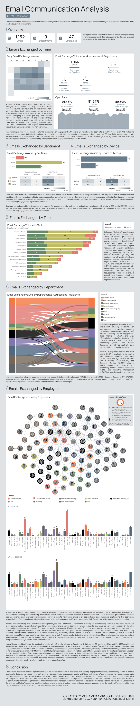

Email Communication Analysis
What 1,132 internal emails reveal about where an organisation's friction actually lives.

The Problem
For the Onyx Data DataDNA Dataset Challenge (July 2024), the brief was to take a month of internal email metadata, with 1,132 emails across 9 departments and 47 employees, and surface the behavioural patterns and organisational dynamics hiding inside it.
A month of email metadata is deceptively easy to summarise badly. The harder version of the brief connects that volume to something an organisation could actually act on: not just how much people email, but when, how they feel while doing it, and who the traffic actually flows through.
The Approach
Five analytical layers were built into one Tableau dashboard:
- Temporal patterns — daily volume, the work-hours vs. after-hours split, and open-rate tracking that holds remarkably steady across the month: 91.46% on work days versus 89.39% on non-work days, with individual days spiking to a full 100% open rate and dipping as low as 72.73%.
- Sentiment scoring (negative/neutral/positive), cross-referenced against topic.
- Device-access breakdown — desktops account for 860 of 1,132 emails (75.97%), against 272 on mobile (24.03%), a useful data point for any decision about where to invest in email tooling.
- Department-to-department flow map.
- Individual-level network graph — sent/received volume and who's actually connected to whom.
The Outcome
5.83% of emails (66 of 1,132) crossed into non-work days, with 94.17% of activity sitting on workdays. Sentiment overall skews healthy (58.3% neutral, 31.18% positive, 10.51% negative), but the topic cross-reference is where it gets useful: "Legal Matters" and "Operational Issues" concentrate the negative sentiment, pointing at exactly where organisational friction lives.
That lens matters more than the sentiment split on its own. "Sales and Marketing" is the single most-discussed topic by volume (11.57% of all emails), but it's a mostly neutral-to-positive topic, not a source of friction. Legal Matters (11.31%) and Operational Issues (10.42%) carry a lesser volume but disproportionately more negative sentiment, while Technical Support (8.92%) and Product Development (8.3%) skew the other way, running strongly neutral-to-positive despite being the kind of topics that might be assumed to generate complaints. Volume alone would have pointed attention at Sales and Marketing; the sentiment cross-reference redirects it to Legal and Operations instead.
On the org-dynamics side, Executive Management sent the most emails of any department (25.35% of the total) while Product Development received the most (18.2%). There exusts a sender/receiver asymmetry that maps directly to where coordination bottlenecks are likely to sit. The network graph goes a layer deeper, identifying specific individuals who sit unusually central to cross-departmental flow.
'Legal Matters' and 'Operational Issues' concentrate the negative sentiment, pointing at exactly where organisational friction lives.